成果展示：植物图鉴

葫芦茶
Tadehagi triquetrum
豆科
药用
📍 分布：印度、斯里兰卡、缅甸、泰国、越南、老挝、柬埔寨、马来西亚、中国（福建、江西、广东、海南、广西、贵州、云南）及太平洋群岛等地
🌿 价值：全株供药用，能清热解毒、健脾消食和利尿，是常用民间草药。
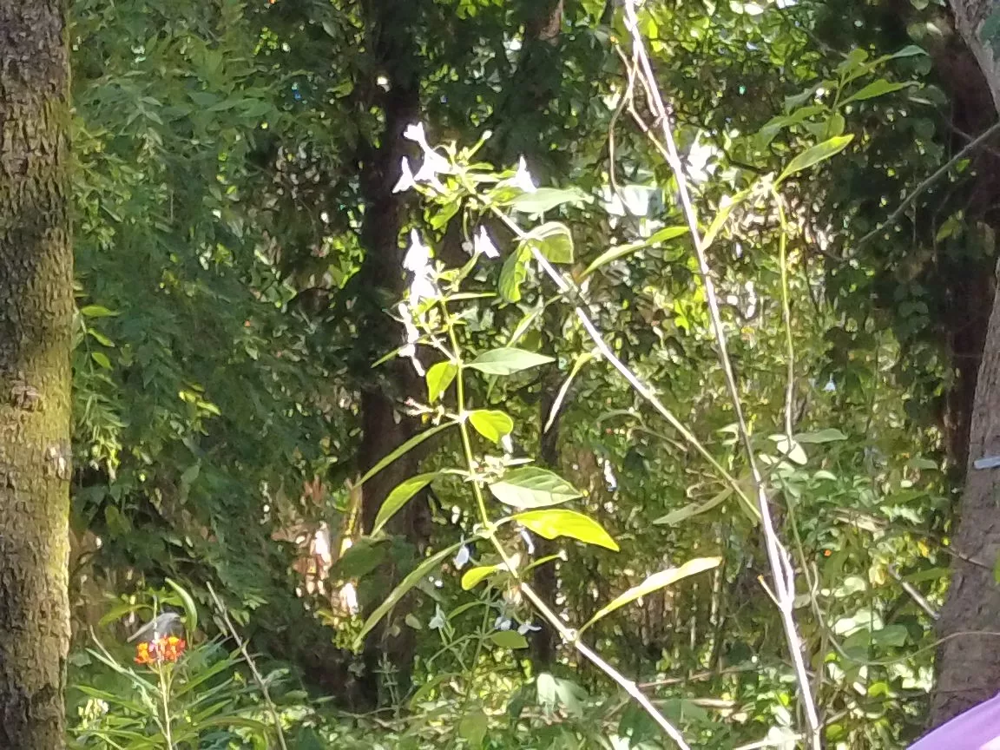
灵枝草
Rhinacanthus nasutus
爵床科
药用
📍 分布：热带非洲、马达加斯加、印度、马来西亚、中南半岛；中国云南野生，海南有栽培
🌿 价值：根、叶含萘醌类化合物，民间煎剂治疗湿疹、体癣等皮肤病；也可作观赏植物。
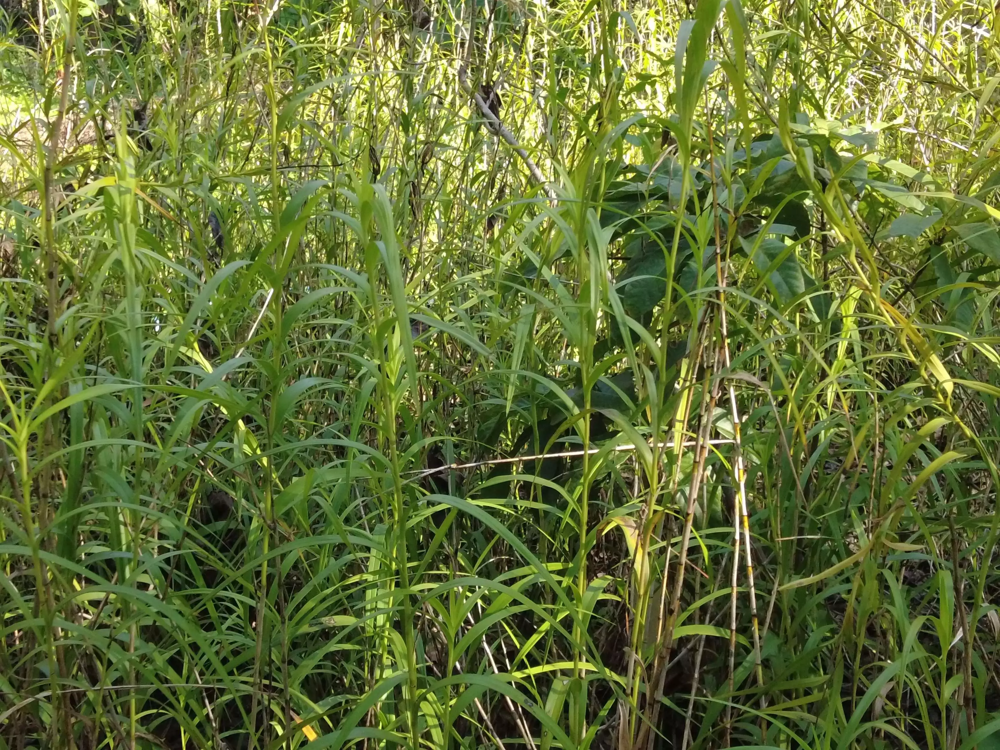
竹叶兰
Arundina graminifolia
兰科
二级保护植物
药用
观赏
📍分布：中国（浙江、江西、福建、台湾、湖南、广东、海南、广西、四川、贵州、云南、西藏）、尼泊尔、锡金、不丹、印度、斯里兰卡、缅甸、越南、老挝、柬埔寨、泰国、马来西亚、印度尼西亚、琉球群岛和塔希提岛。
🌿 价值：具有较高的园艺观赏价值；亦具药用价值，根状茎用于治疗药物中毒，全草治肝炎，跌打损伤，风湿疼痛，膀胱炎，毒蛇咬伤。
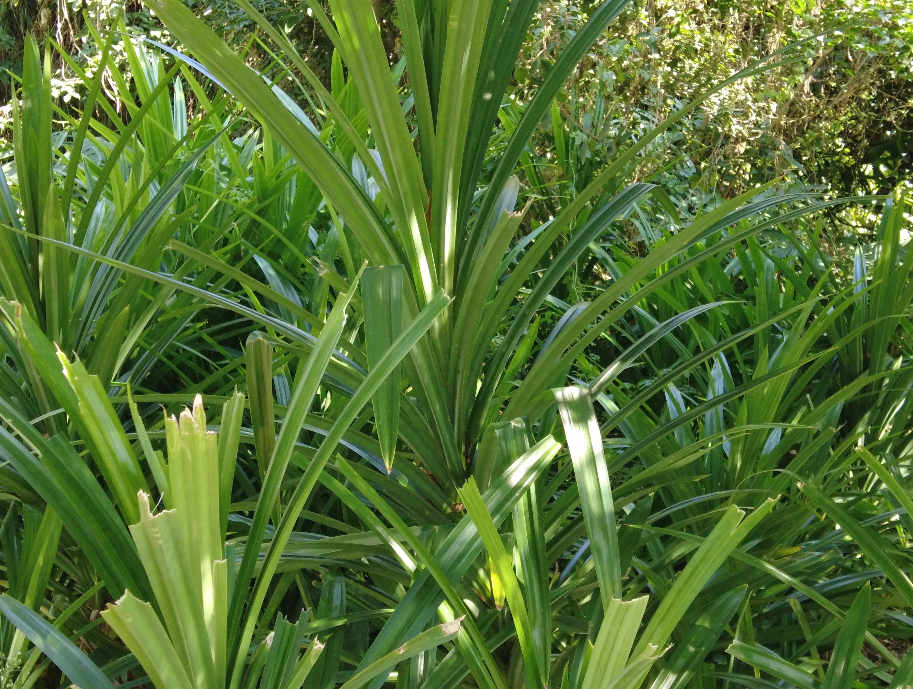
香露兜
Pandanus amaryllifolius
露兜树科
食用
药用
📍 分布：原产地可能为印度尼西亚马鲁古群岛；中国海南有栽培。
🌿 价值：叶片散发粽香，可作为食品调味料（如斑兰叶）；挥发油含角鲨烯等活性成分，具有保健作用，可用于食品、日化等领域。
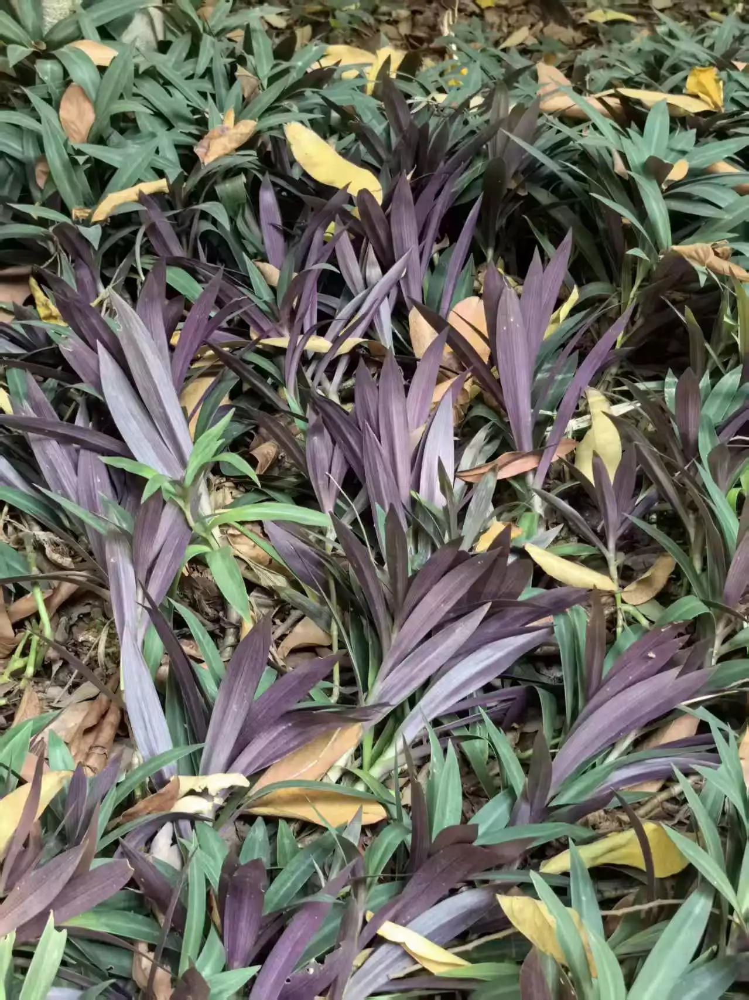
紫背万年青
Tradescantia spathacea
鸭跖草科
观赏 药用
📍 分布：原产于墨西哥和西印度群岛，现在中国广泛栽培。
🌿 价值：株形独特，叶面绿背紫，是优美的盆栽观叶植物；花序可入药，有清肺化痰、凉血止血之效。
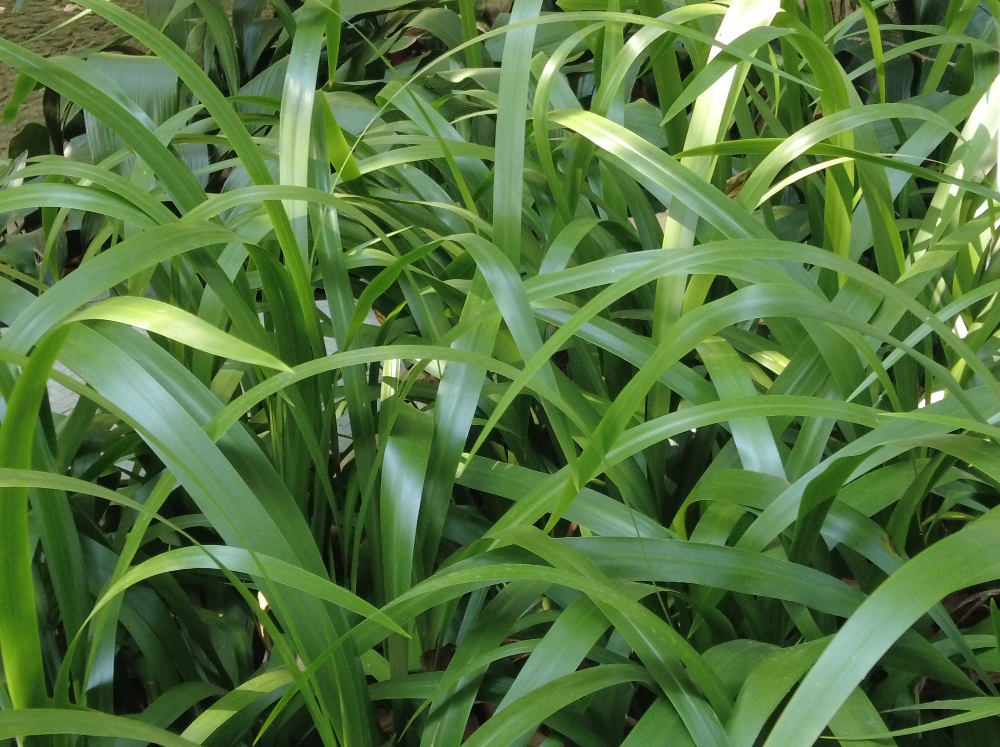
麦冬
Ophiopogon japonicus
天门冬科
药用
📍 分布：主产浙江、四川；生于山坡林下或溪旁。
🌿 价值：块根入药，具有养阴润肺、益胃生津、清心除烦的功效，用于肺燥干咳、阴虚劳嗽、津伤口渴等症。

樟叶木防己
Cocculus laurifolius
防己科
药用
📍 分布：中国南部各省区，北至湖南西南部、贵州南部和西藏吉隆；亚洲南部、东南部和东部也有分布。
🌿 价值：根和全株入药，有顺气宽胸、祛风止痛等功效，用于脘腹疼痛、胸膈痞胀、风湿腰腿痛、跌打肿痛等病症。
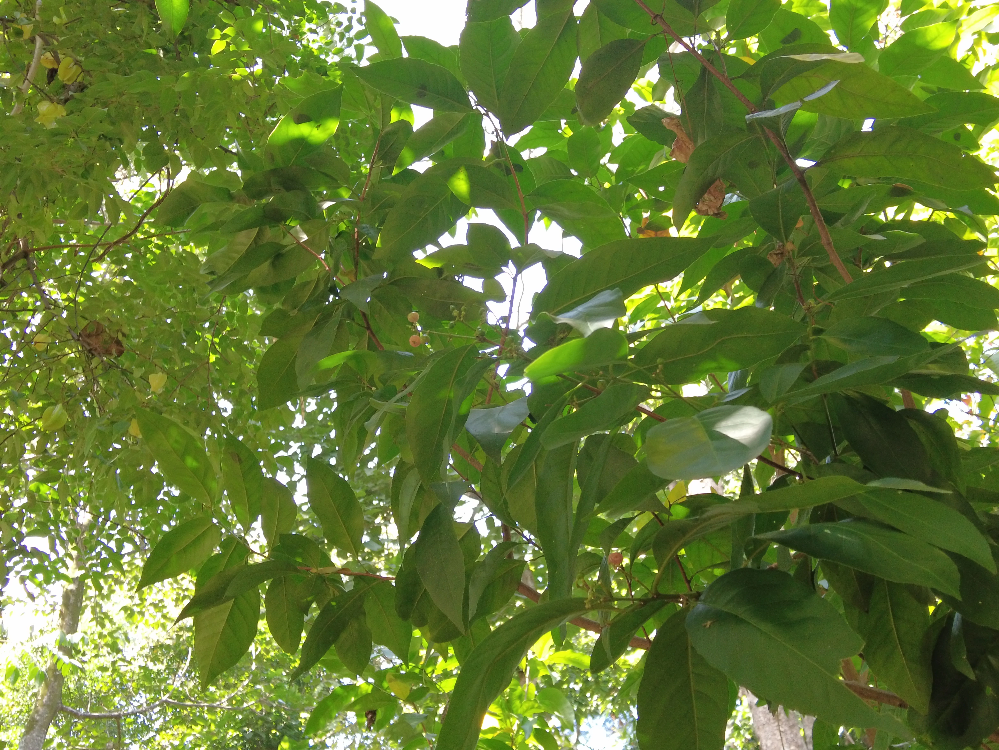
亮叶山小橘
Glycosmis lucida
芸香科
药用
📍 分布：云南西双版纳及以西各地（景洪、勐腊、景东、澜沧等地）；印度及缅甸东北部也有。
🌿 价值：根、叶和果实入药，能祛痰止咳、理气消积、散瘀消肿，用于感冒咳嗽、消化不良、跌打淤血肿痛等。
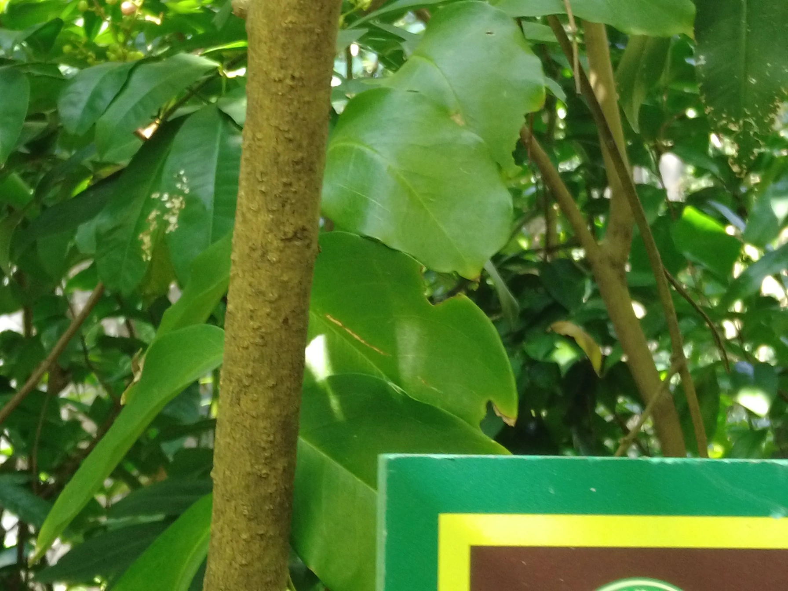
蝉翼藤
Securidaca inappendiculata
远志科
药用
📍 分布：广东、海南、广西、云南；印度、缅甸、越南、印度尼西亚和马来西亚也有分布。
🌿 价值：茎皮纤维可作麻类代用品；根及根皮入药，能活血散瘀、消肿止痛、清热利尿，用于跌打损伤、风湿病、骨折等。
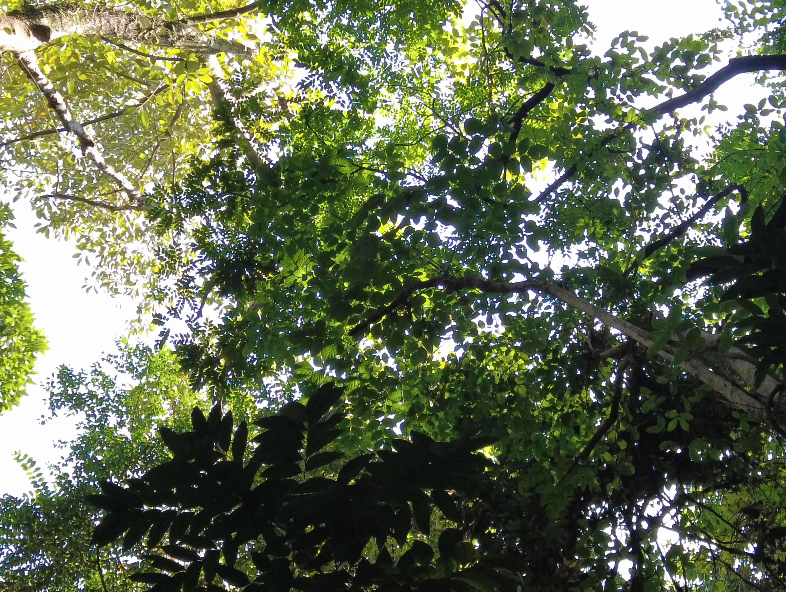
木蝴蝶
Oroxylum indicum
紫葳科
药用
观赏
📍 分布：中国（福建、台湾、广东、广西、四川、贵州、云南）、越南、老挝、泰国、柬埔寨、缅甸、印度、马来西亚、菲律宾、印度尼西亚等地。
🌿 价值：种子和树皮入药，能清肺利咽、舒肝和胃；花朵艳丽，种子形似蝴蝶，可作为园林观赏植物。

蝴蝶果
Cleidiocarpon cavaleriei
大戟科
三级保护植物
食用
观赏
📍 分布：中国云南、广西等省区；国外越南北部也有分布。
🌿 价值：树形美观，可作行道树或庭园绿化；木材适做家具；种子富含淀粉和油，经去毒处理后可食用。
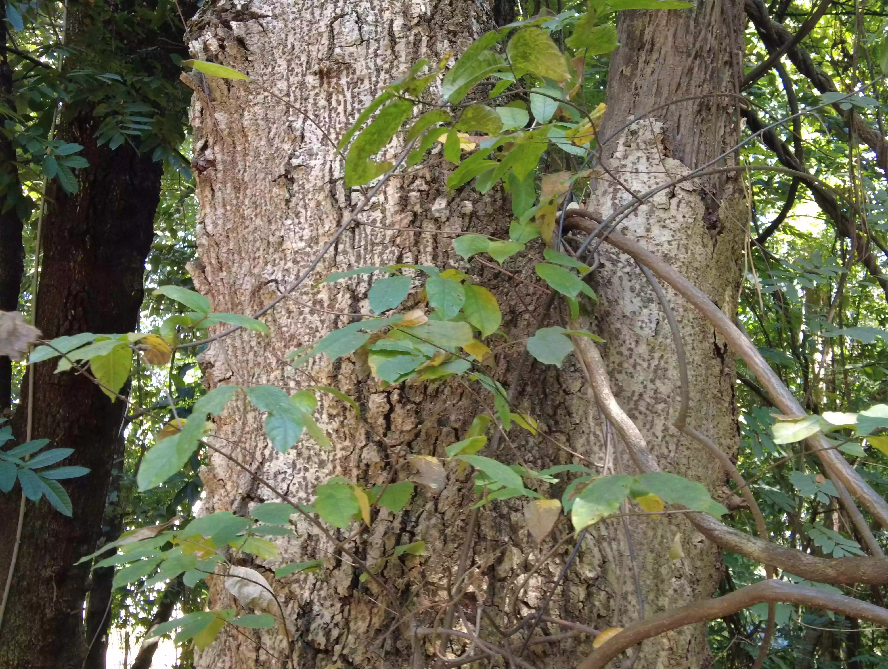
箭毒羊角拗
Strophanthus hispidus
夹竹桃科
有毒
药用
📍 分布：原产非洲南部；中国云南、广东、广西等地有人工引种栽培。
🌿 价值：全株含强心苷类毒素，种子毒性最强；传统用于制作箭毒和强心药物，但因治疗安全范围窄，使用需极度谨慎。
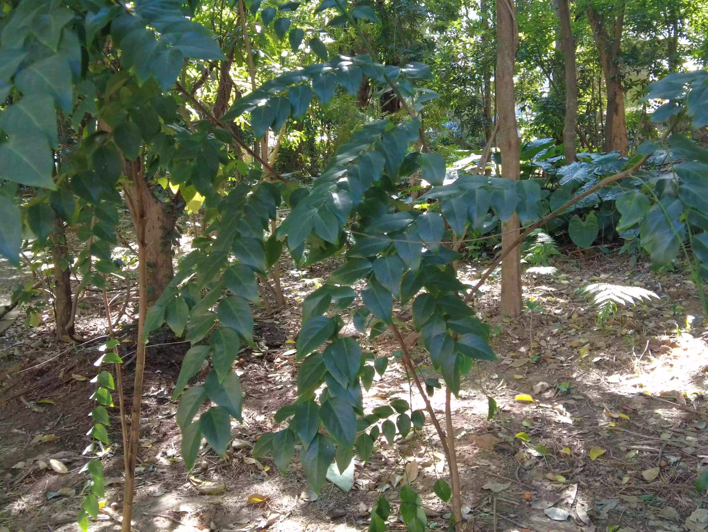
黑面神
Breynia fruticosa
叶下珠科
药用
📍 分布：分布于中国、越南、老挝、泰国；在中国分布于浙江、福建、广东、海南、广西、四川、贵州、云南等省区，散生于山坡、平地旷野灌木丛中或林缘。
🌿 价值：叶及根入药，性寒味甘，具散疮消毒、清热解毒之效，外敷治湿疹、皮炎，内服治肠胃炎、咽喉炎等。
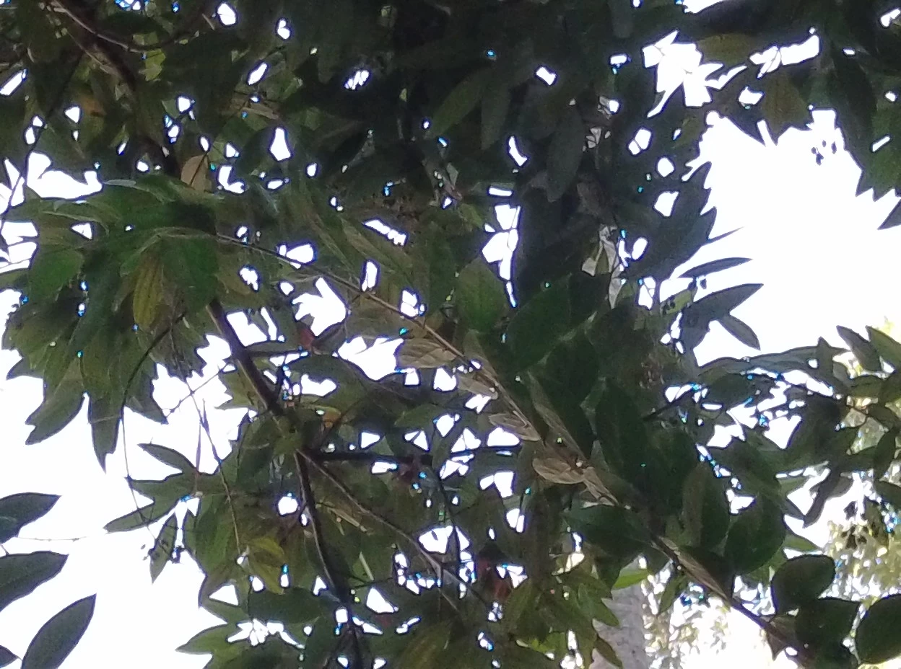
肉桂
Cinnamomum cassia
樟科
药用
食用
📍 分布：原产于中国，在热带及亚热带地区广为栽培，广西栽培较多；印度、老挝、越南至印度尼西亚等地也有分布。
🌿 价值：树皮（肉桂）具温中补肾、散寒止痛的功效；亦为重要香料，用于烘焙、腌制食品；可提制桂油用于化妆品、香烟等。
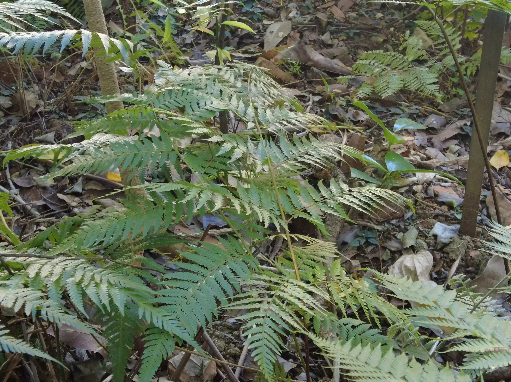
魔芋
Amorphophallus konjac
天南星科
食用
药用
📍 分布：东喜马拉雅山区至泰国、越南、菲律宾、日本和中国；中国自陕西、甘肃、宁夏至江南各省均有分布。
🌿 价值：块茎可加工成魔芋豆腐供食用；入药能解毒消肿、健胃消胀；全株有毒，需经加工后使用。
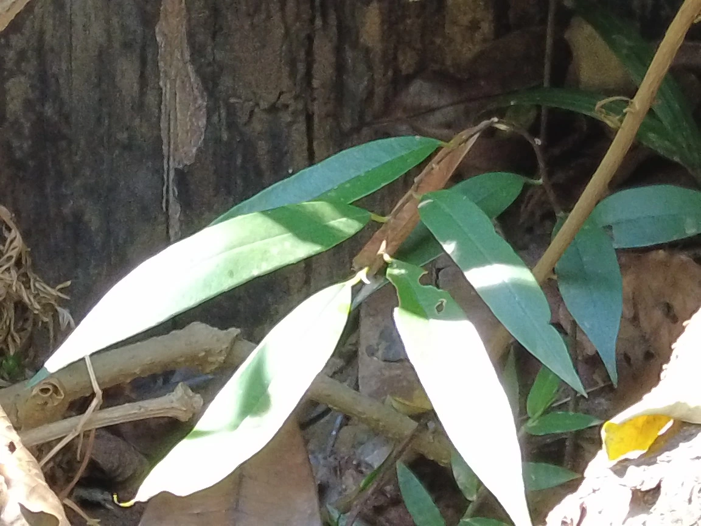
假鹊肾树
Pseudostreblus indicus
桑科
药用
📍 分布：中国广东、海南、广西（南部）、云南（南部）；印度东北部、泰国北部也有分布。
🌿 价值：树皮入药，能消炎止血、镇痛祛瘀，治消化道出血、胃痛、外伤出血、跌打、风湿痛等。
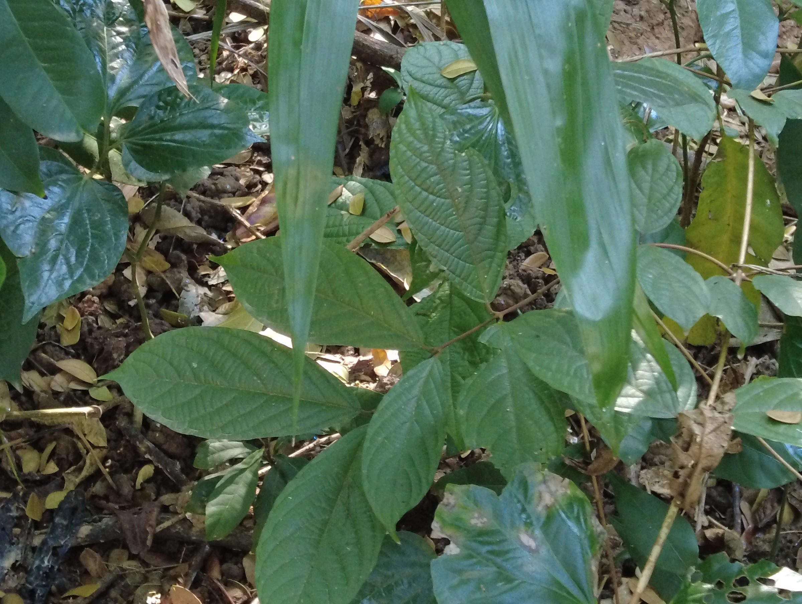
假蒟
Piper sarmentosum
胡椒科
药用
食用
📍 分布：中国福建、广东、广西、云南、贵州及西藏；印度、越南、马来西亚、菲律宾、印度尼西亚、巴布亚新几内亚也有分布。
🌿 价值：全草入药，能祛风散寒、行气止痛、活络消肿；嫩茎叶可作蔬菜，用于炒食、做汤等。

红球姜
Zingiber zerumbet
姜科
药用
食用
观赏
📍 分布：原产于马来西亚；现产于中国广东、广西、云南等省区，亚洲热带地区广布。
🌿 价值：根茎能祛风解毒，治肚痛、腹泻；嫩茎叶可作蔬菜；花序球果状、后期变红，具观赏价值；还可提取芳香油。
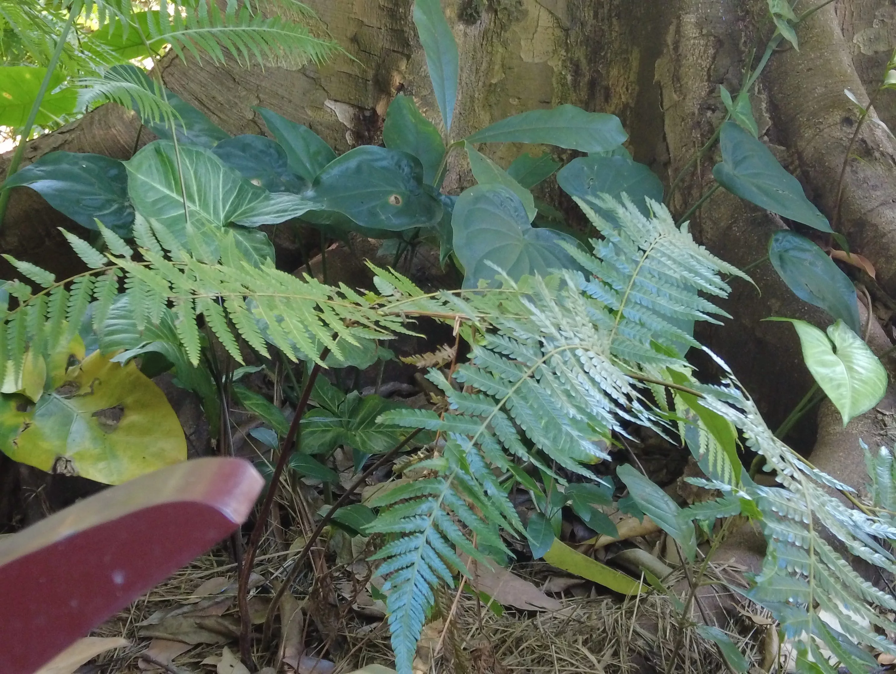
金毛狗脊
Cibotium barometz
蚌壳蕨科
二级保护植物
药用
📍 分布：中国云南（昭通等地）海拔800米以下的山箐林下。
🌿 价值：根状茎外被金黄色茸毛，是良好的止血药；具补肝肾、利尿等功效，用于筋骨不健等症。
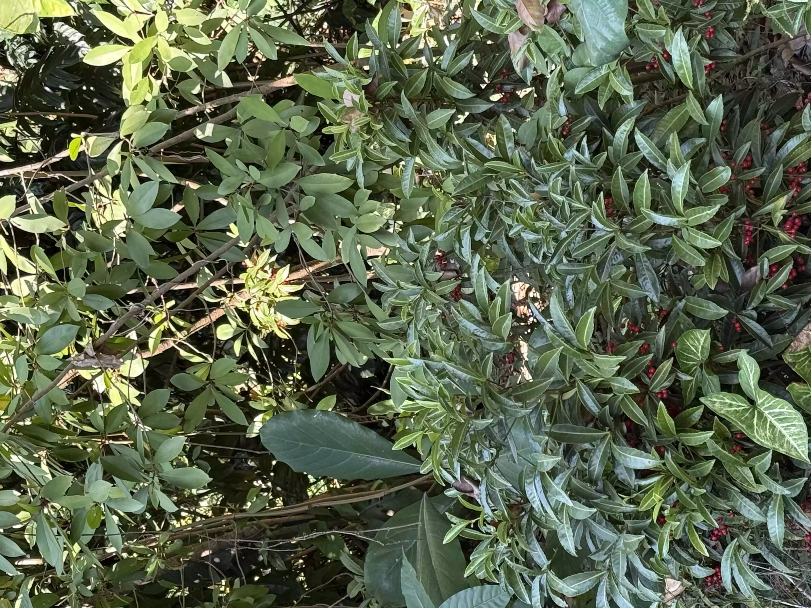
朱砂根
Ardisia crenata
紫金牛科
药用
观赏
📍 分布：主要分布于中国长江流域以南的浙江、安徽、江西、湖南、湖北、四川、福建、广东、广西等地。
🌿 价值：其根部可入药，具有清热解毒、活血止痛的功效，常用于治疗咽喉肿痛、风湿痹痛、跌打损伤。同时，因其植株形态美观，果实鲜红，也常作为园林观赏植物栽培。

龙血树
Dracaena draco
天门冬科
二级保护植物
药用
观赏
📍 分布：原产于非洲热带、亚热带及西班牙加那利群岛等地。在中国华南地区有引种栽培，野生资源分布于云南、广西、海南等地。
🌿 价值：其树脂可提取名贵中药“血竭”，用于散瘀止血、止咳平喘。树形优美，常作为大型庭院观赏植物或室内盆栽。
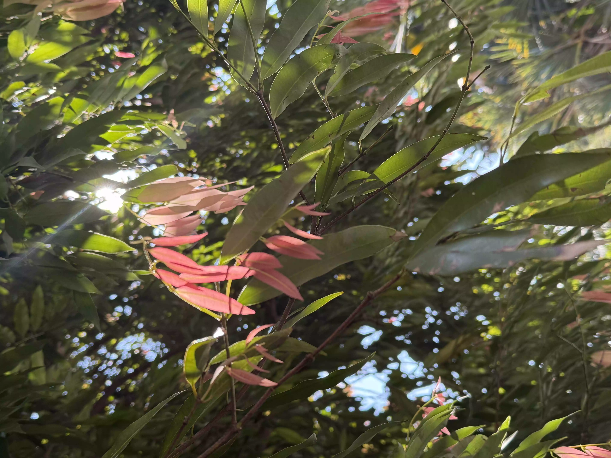
铁力木
Mesua ferrea
藤黄科
二级保护植物
珍贵用材
油料
📍 分布：原产亚洲热带地区。在中国是云南西南部和广西西南部特有的珍贵树种。
🌿
价值：是我国已知最硬重的木材，气干密度大于水，纹理致密，耐腐防蛀，是用于高级建筑、特种雕刻、乐器的顶级用材。种子含油量高达74%，是优良的木本油料树种。树形美观，花大芳香，也具有很高的观赏价值。

鸡蛋花
Plumeria rubra
夹竹桃科
食用
药用
观赏
📍 分布：原产美洲热带，在中国福建、广东、广西、海南及云南等地常见栽培。
🌿 价值：花朵晒干可泡茶饮用，是广东凉茶“五花茶”的原料之一，气味芳香。干燥花可入药，具清热解暑、清肠止泻、止咳化痰的功效。同时，因其树冠美观、花色素雅，也广泛作为观赏植物栽培。
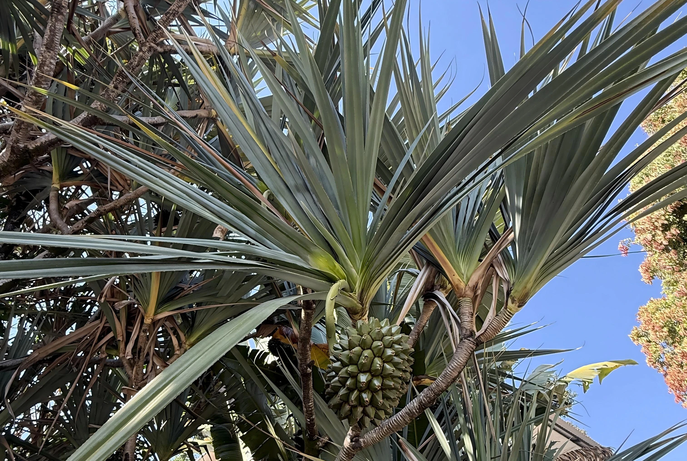
扇叶露兜树
Pandanus utilis
露兜树科
观赏
食用
药用
📍 分布：原产于非洲马达加斯加。在中国福建、广东、广西、海南、香港和台湾等地有栽培。
🌿 价值：树形奇特，叶缘带刺，是优良的海滨绿化、观赏树种。其果肉可鲜食或加工，叶片可用于编织。花和植株在民间也有一定的药用价值。

吉祥草
Reineckea carnea
百合科
药用
观赏
📍 分布：分布于中国长江流域以南及陕西、河南等地，日本也有分布。常生于阴湿山坡或林下，也多栽培。
🌿 价值：全草入药，具有清肺止咳、凉血止血、解毒利咽等功效。同时，作为多年生常绿草本，它适应半阴环境，叶色翠绿，也常被栽培作观赏地被植物。

假鹰爪
Desmos chinensis
番荔枝科
药用
观赏
📍 分布：分布于中国广东、广西、云南、贵州等地，印度、越南及马来西亚等亚洲热带地区也有分布。
🌿 价值：根、叶供药用，能祛风利湿、健脾和胃、化瘀止痛。花朵香味浓郁，可提取芳香油，也是理想的观赏花卉。其茎皮纤维可用于制绳。
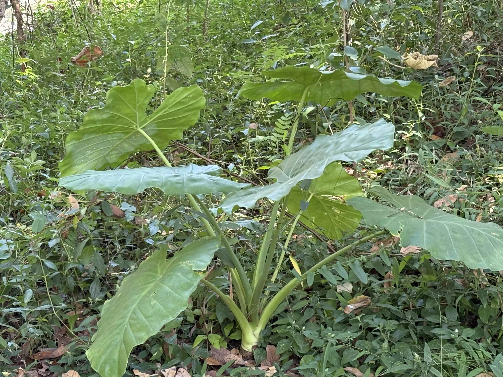
大野芋
Leucocasia gigantea
天南星科
近危
食用
药用
📍 分布：原产于亚洲，在中国广西、云南、广东、湖南等南方省份有分布，也见于东南亚各国。
🌿 价值：栽培种的叶柄可供食用；根茎可用于药用，治疗跌打损伤等。植株高大，叶大如伞，常用于营造热带园林景观。

海滨木巴戟
Morinda citrifolia
茜草科
食用
药用
观赏
📍 分布：分布于中国台湾、海南及西沙群岛等地，广泛分布于亚洲热带至太平洋岛屿。
🌿 价值：其果实（又名诺丽果）可食用或加工成保健饮料；在民间具有悠久的药用历史。树形通直优雅，常作庭园观赏树。根、茎还可提取染料。
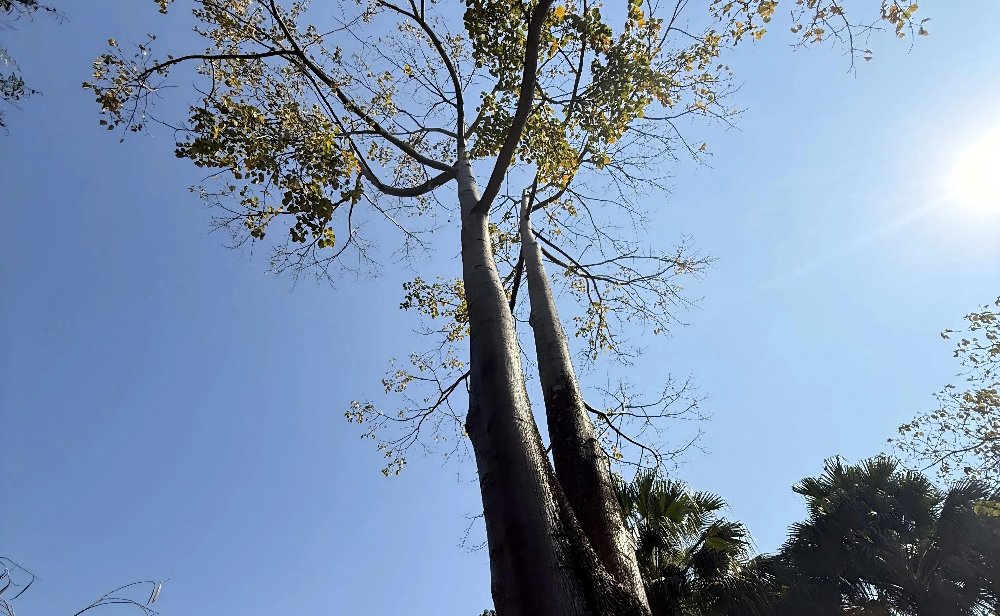
四数木
Tetrameles nudiflora
四数木科
二级保护植物
📍 分布：主要分布于中国云南南部（景洪、勐腊等地），亦见于印度、缅甸、越南等东南亚地区，常生长在石灰岩山地的热带雨林中。
🌿 价值：世界上最典型、国内最大的板根植物，在热带雨林生态研究方面有重要价值。其木材材质较次，多用于临时建筑、轻型板材；巨大的板根在民间曾被用作车轮。

云南石梓
Gmelina arborea
唇形科
易危
材用
食用
药用
📍 分布：分布于中国云南、广东、广西等地，在印度、缅甸、泰国等南亚至东南亚地区也有分布。
🌿 价值：珍贵速生用材树种，木材性质近似柚木，用于高级家具、造船等。其花可提取天然色素和香料，是傣族传统食品“毫诺索”的原料。树皮和叶可入药，具有除风止痒、清火解毒等功效。
檀香
Santalum album
檀香科
易危
经济植物
药用
📍 分布：原产于印度、印度尼西亚等热带地区。在中国广东、广西、海南、云南、福建等地有引种栽培。
🌿 价值：名贵的香料和药用植物。其树干心材（檀香木）可提取被誉为“液体黄金”的檀香油，也可用于雕刻和制作工艺品。檀香作为中药材，具有行气温中、开胃止痛的功效。
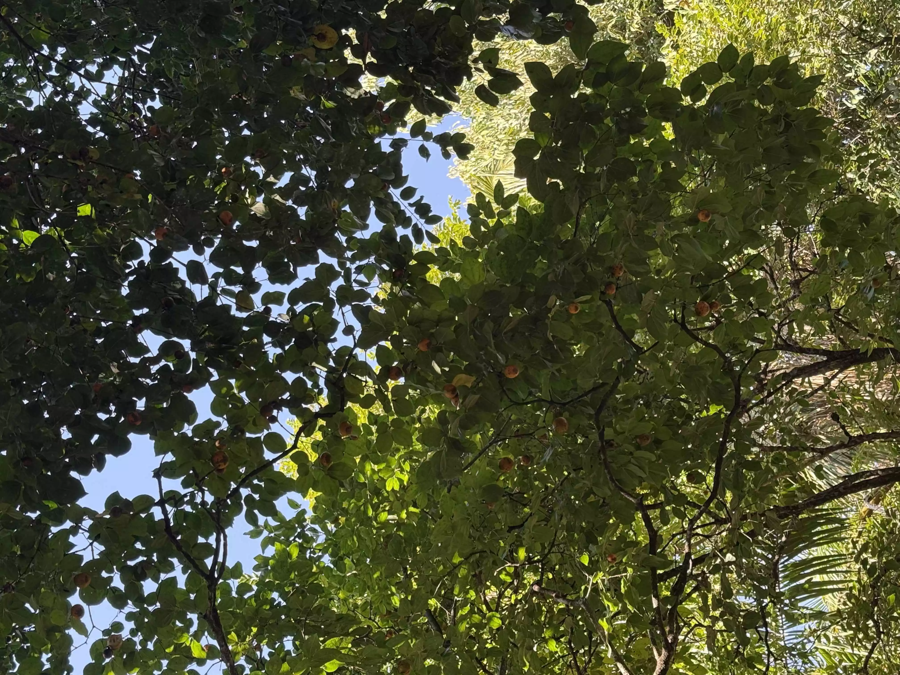
马钱子
Strychnos nux-vomica
马钱科
药用
大毒
📍 分布：原产于印度、越南、缅甸等热带地区。在中国福建、广东、广西、云南等地有栽培。
🌿 价值：成熟种子为重要中药材，具有通络止痛、散结消肿的功效，常用于治疗风湿顽痹、麻木瘫痪、跌打损伤。该药有大毒，必须经专业炮制减毒后，在医生指导下严格按剂量使用，孕妇禁用。

贝叶棕
Corypha umbraculifera
棕榈科
文化植物
观赏
食用
📍 分布：原产于印度、斯里兰卡等亚洲热带地区。在中国云南西双版纳地区有引种栽培，多见于佛寺和植物园内。
🌿 价值：树形高大美观，是优良的绿化观赏植物。其叶片在历史上被加工成“贝叶”，用于刻写佛教经文，形成东南亚独特的“贝叶经”文化。此外，花序汁液可制糖或酿酒，树干髓心可提取淀粉。
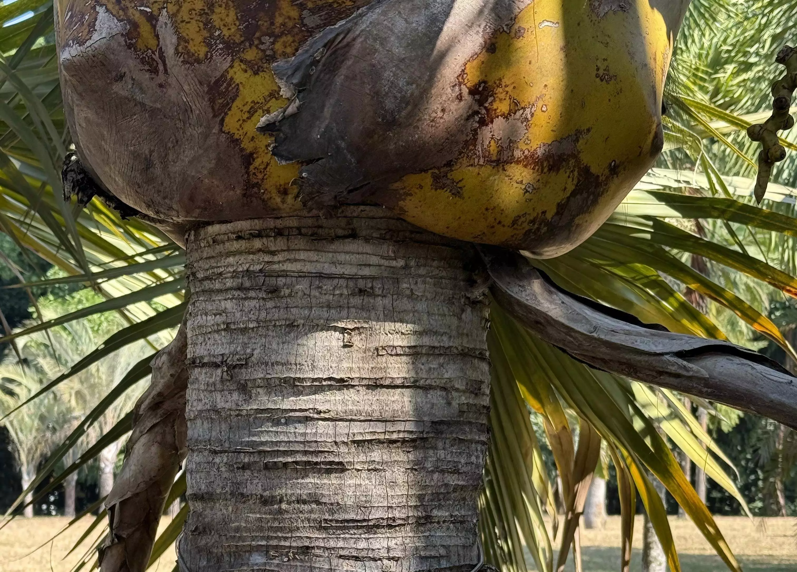
黄脉葵
Latania verschaffeltii
棕榈科
濒危
观赏
材用
📍 分布：原产于非洲毛里求斯的罗德里格斯岛。在中国华南地区有引种栽培。
🌿 价值：珍稀的观赏棕榈，幼株叶脉与叶柄呈鲜明的黄色，株形优雅，常用于园林景观。其木材坚硬，带黑色斑纹，传统上用于建筑。
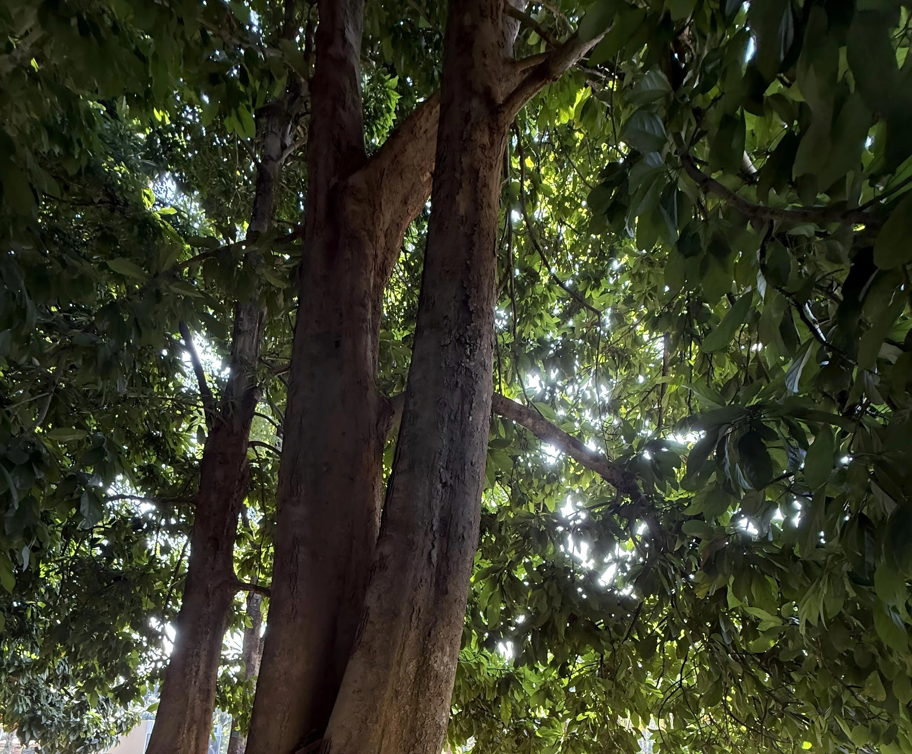
胖大海
Sterculia lychnophora
梧桐科
药用
小毒
📍 分布：生于热带地区。主产于泰国、越南、柬埔寨等国。
🌿 价值：以干燥成熟种子入药，是一种常用的清热化痰药，具有清热润肺、利咽开音、润肠通便的功效，主治肺热声哑、咽喉干痛、热结便秘等症。药性寒凉，有小毒，不宜长期过量服用。
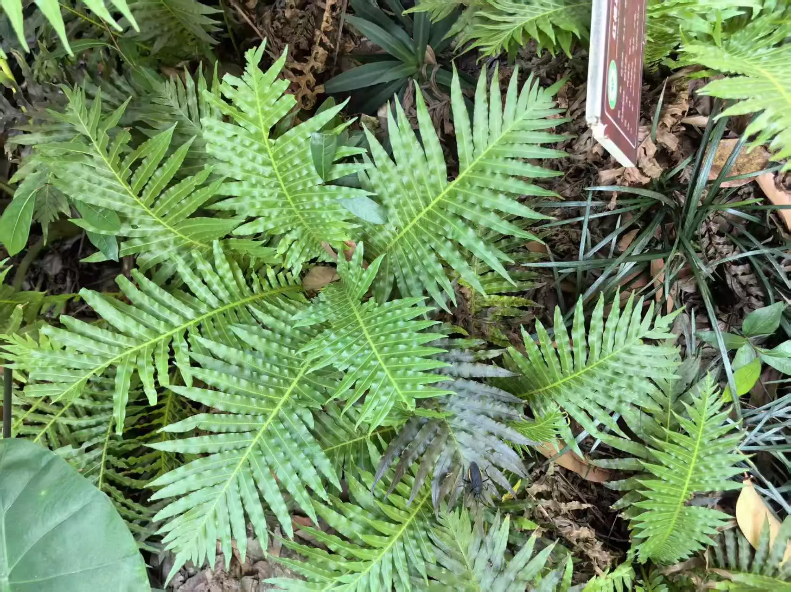
红椿蕨
Neoblechnum brasiliense
乌毛蕨科
观赏
📍 分布：原产于巴西东南部，世界各地有栽培。
🌿 价值：叶色翠绿，形态优美，常盆栽观赏，或用于花境搭配、庭院观赏。因其植株呈伞形，四季常青，也常用于室内绿化装饰，营造生机盎然的景象。
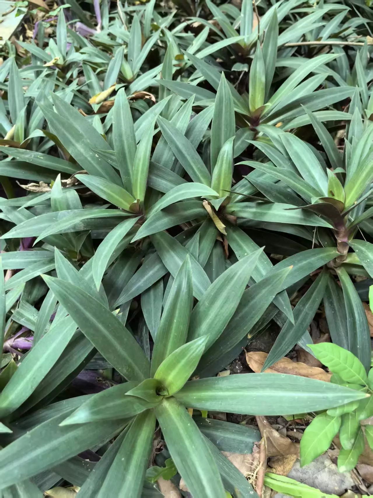
巢蕨
Asplenium nidus
铁角蕨科
食用
药用
观赏
📍 分布：分布于中国海南、云南、台湾、广东、广西等地；也广布于热带亚洲其他地区。
🌿 价值：嫩叶可作为野菜食用，富含维生素等营养物质。全草或根茎可强筋壮骨、活血祛瘀，用于治疗跌打损伤、骨折等。叶片碧绿光亮，形态优美，是常见的观叶植物，常用于室内盆栽或热带园林景观。
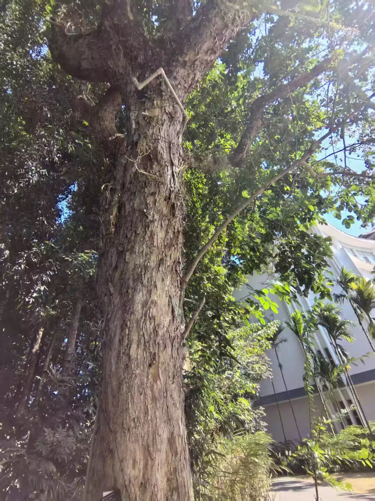
紫檀
Pterocarpus indicus
豆科
二级保护植物
濒危
药用
材用
📍 分布：产中国台湾、广东和云南（南部）；印度、菲律宾、印度尼西亚和缅甸等地也有分布。
🌿 价值：坚硬致密，心材红色，为优良的建筑、乐器及家具用材。其树脂和木材可药用；心材有助于治疗肾结石、胃病等，树液提取物有收敛止血作用。
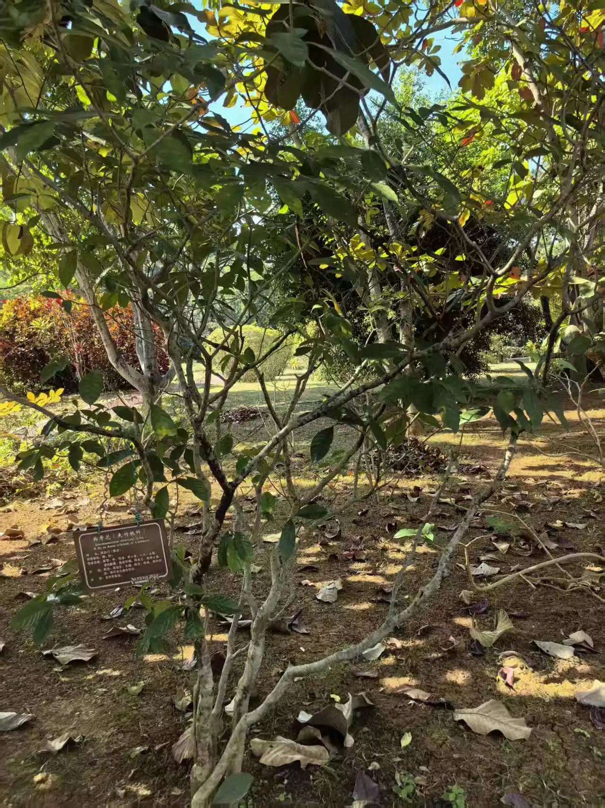
狗牙花
Tabernaemontana divaricata
夹竹桃科
濒危
药用
观赏
📍 分布：原产于印度及中国云南，在广西、广东、台湾及亚洲热带和亚热带等地区广泛栽培。
🌿 价值：其枝叶茂密，花朵洁白素雅，花期长，是常见的园林绿化和盆栽植物。其根、叶入药，有清热降压、解毒消肿的功效，可用于治疗咽喉肿痛、跌打损伤和痈疽疮毒。
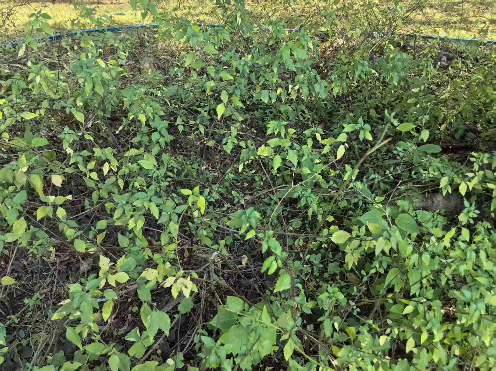
肾茶
Orthosiphon aristatus
唇形科
药用
观赏
📍 分布：分布于中国广东、海南、广西、云南、台湾及福建；自印度、缅甸至印度尼西亚、菲律宾及澳大利亚等地也有分布。
🌿 价值：其地上部分入药，性甘、微苦、凉。传统上主要用于清热、利尿、排石，主治急慢性肾炎、膀胱炎、尿路结石及风湿性关节炎。因其花丝细长，形似猫须，叶色翠绿，也常被用于园林花坛观赏。

雄黄兰
Crocosmia crocosmiflora
鸢尾科
药用
观赏
📍 分布：原产非洲南部，现我国各地广泛栽培，在南方常为露地栽培。
🌿 价值：其花色鲜艳，有红、橙、黄等色，花期为仲夏，是布置花境、花坛和作切花的优良材料。其干燥球茎可入药，具有解毒、消肿、止痛的功效，常用于治疗脘痛、筋骨疼痛、痄腮、疮疡及跌打损伤。
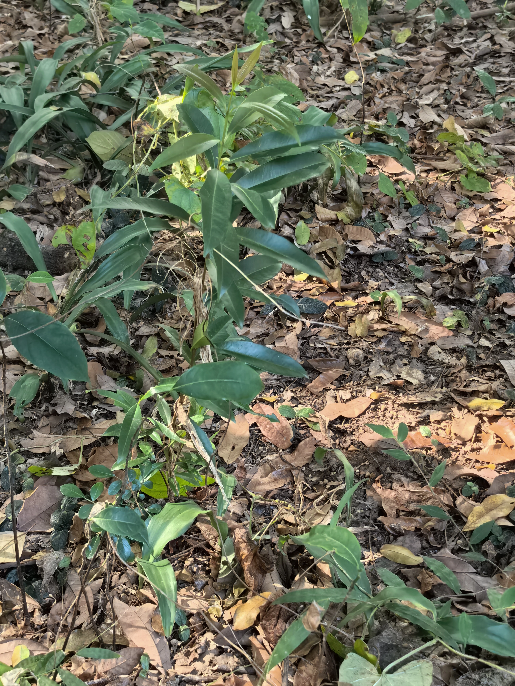
开口箭
Tupistra chinensis
百合科
药用
有毒
📍 分布：分布于中国陕西、甘肃、湖北、四川、云南、贵州、广西、广东、湖南、江西、福建、台湾、浙江、安徽等地。
🌿
价值：根状茎可入药，具有清热解毒、祛风除湿、散瘀止痛的功效，常用于治疗白喉、咽喉肿痛、风湿痹痛、跌打损伤、胃痛及痈肿疮毒等。现代研究表明其提取物具有一定的抗肿瘤活性。本品有毒，内服用量不宜过大。
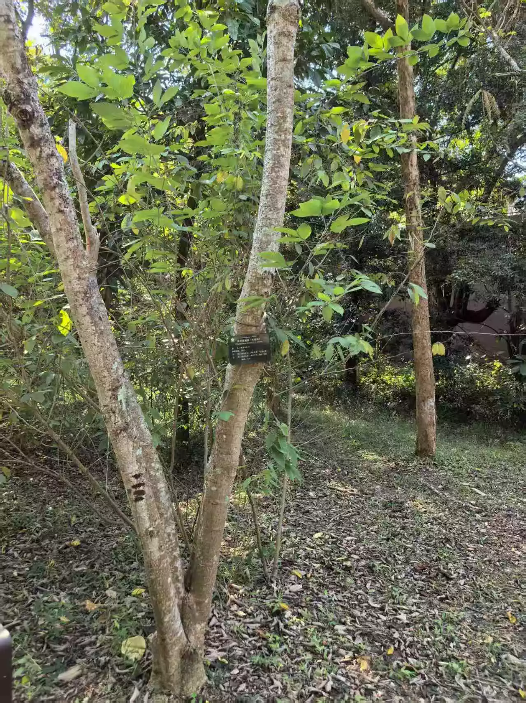
西印度醋栗
Phyllanthus acidus
叶下珠科
食用
药用
观赏
📍 分布：原产于马达加斯加，在中国台湾、海南有分布，在东南亚、印度等热带及亚热带地区也有栽培。
🌿 价值：果实极酸，常加工成果酱、果汁、蜜饯或作为菜肴的调味料。树皮、根、叶可入药，用于缓解咳嗽、风湿腰痛等症状。植株果实繁密，也可用于庭院观赏。
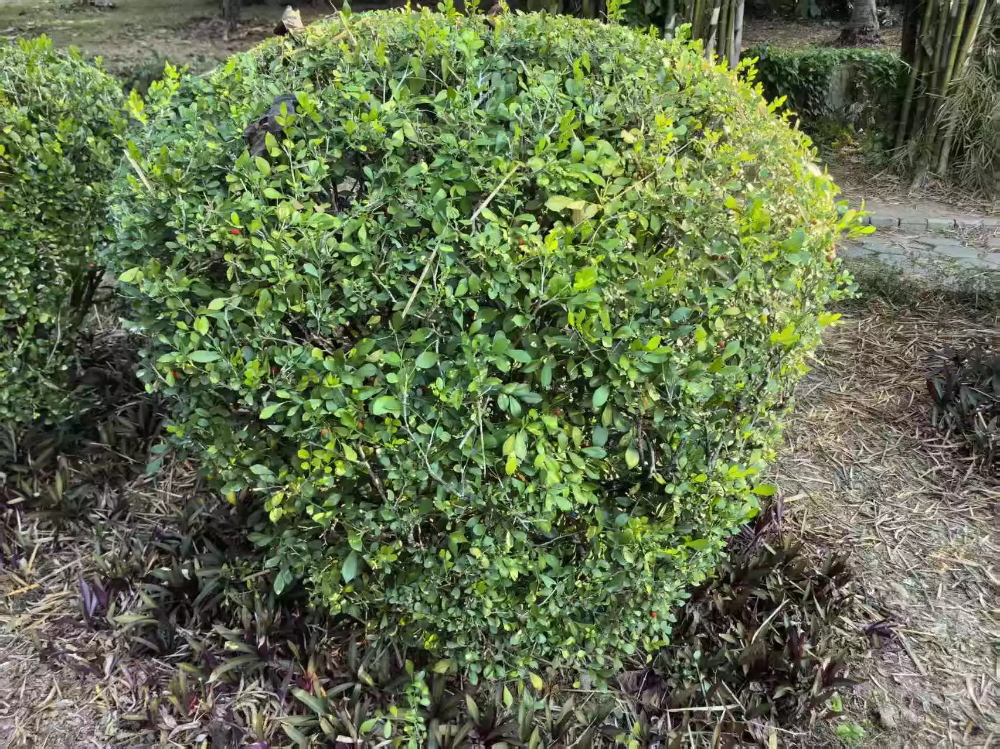
细叶雪茄花
Cuphea hyssopifolia
千屈菜科
观赏
📍 分布：原产于墨西哥至中美洲，现热带地区广为栽培。在中国广东、广西、云南、福建等省区已引种。
🌿 价值：植株矮小，分枝繁密，四季常绿，花期极长，几乎全年开花。花小而多，盛开时犹如繁星点缀，常用于布置花坛、花境边缘，作绿篱或盆栽观赏，绿化与观赏价值高。
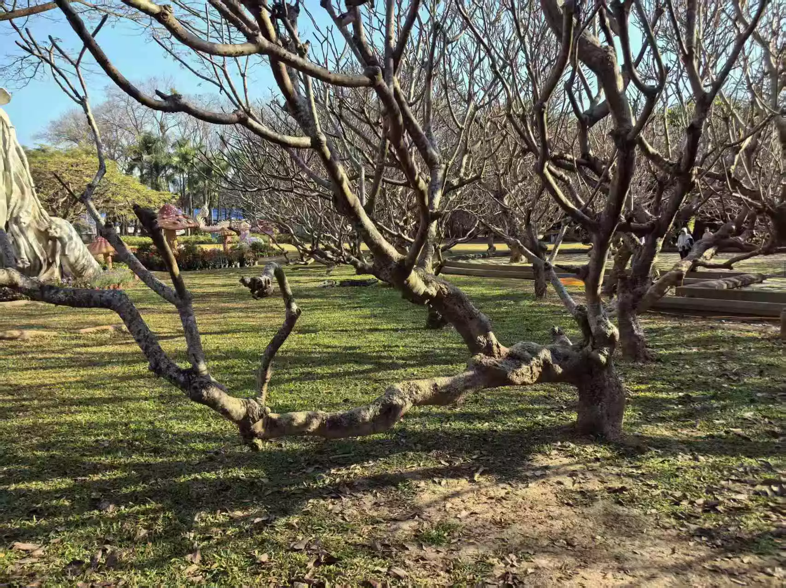
红花鸡蛋花
Plumeria rubra
夹竹桃科
观赏
药用
食用
📍 分布：原产南美洲墨西哥至委内瑞拉一带，现已遍布全世界热带及亚热带地区。中国华南、西南地区有栽培，长江流域及其以北地区常温室栽培。
🌿 价值：树形优美，花期长（5-11月），花色红艳，芳香浓郁，是热带、亚热带地区著名的庭园观赏植物。花朵可提制香料、晒干制饮料，也可炒食或油炸。其花和茎皮有清热、利湿、解暑等功效。
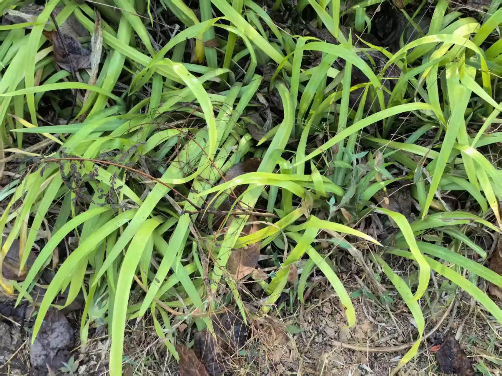
鸢尾
Iris tectorum
鸢尾科
药用
观赏
生态
📍 分布：原产于中国，主要分布在中国华东、华中、西南和西北各省（自治区、直辖市），如山西、陕西、甘肃、江苏、浙江、福建、湖北、四川、云南等地。
🌿
价值：根状茎可入药，具有活血祛瘀、祛风利湿、消炎等功效，可用于治疗关节炎、跌打损伤等症。是重要的观赏花卉，花大而奇，宛若彩蝶，常用于庭园、花坛、盆栽或作切花。对氟化物敏感，可用于监测环境污染。
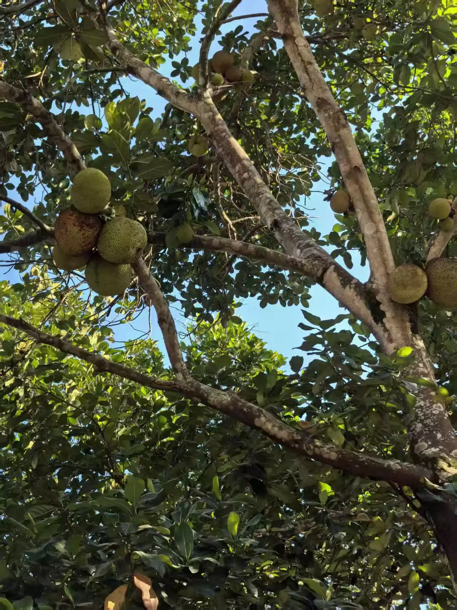
菠萝蜜
Artocarpus heterophyllus
桑科
食用
药用
📍 分布：原产于印度，在热带潮湿地区广泛栽培。中国福建、台湾、广东、广西、海南和云南南部等地均有引种栽培。
🌿
价值：著名热带食用果树，果实巨大，果肉鲜食或加工成果汁、果脯等；种子富含淀粉，可煮食。树液和叶可药用，消肿解毒；果肉有止渴、通乳、补中益气的功效。木材金黄坚硬，可制作家具或作染料；树形整齐，也常作庭荫树和行道树。
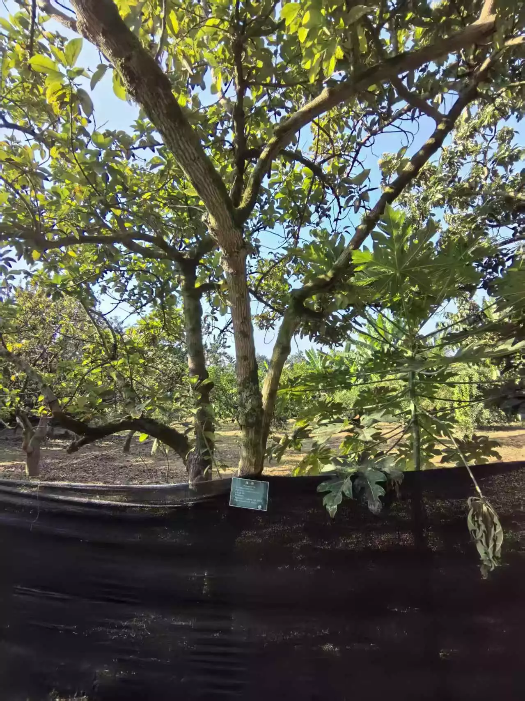
油梨
Persea americana
樟科
食用
药用
经济植物
📍 分布：原产于美洲的墨西哥至哥伦比亚和西印度群岛。现已遍布全世界热带及亚热带地区。我国广东、海南、福建、台湾、云南及四川等地有少量栽培。
🌿
价值：著名热带水果，又名牛油果。果肉含脂肪、蛋白质和多种维生素，口感独特，常鲜食或制成果酱、色拉、饮品。果仁含脂肪油，可供食用、医药和化妆品工业用。叶和皮可助消化、治咳嗽。被视为经济价值高的木本油料树种。
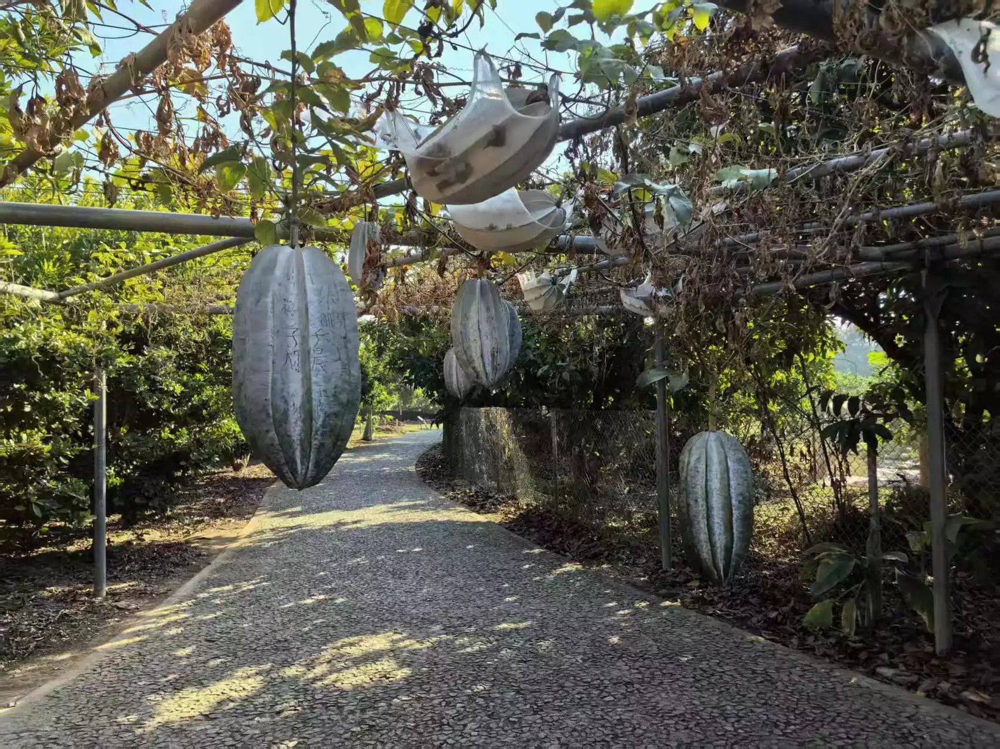
西非牡蛎瓜
Telfairia occidentalis
葫芦科
食用
📍 分布：原产于非洲的尼日利亚。目前已在我国海南、云南（西双版纳）等地成功引种栽培。
🌿
价值：一种新奇且营养价值高的热带水果。种子是其主要的食用部分，蛋白质含量超25%，油脂含量超50%，营养丰富，可煮熟、发酵或磨粉食用。嫩芽和嫩叶亦可作为蔬菜食用。此外，它也被列为具有开发潜力的油料作物。
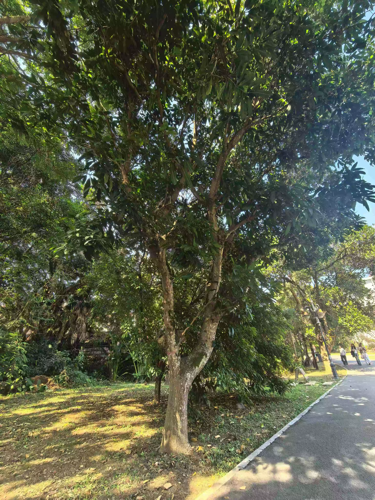
芒果
Mangifera indica
漆树科
食用
药用
经济植物
📍 分布：原产印度至东南亚，现广泛栽培于全球热带及亚热带地区。在中国，云南、广西、广东、福建、台湾等地均有种植。
🌿 价值：著名的热带水果，被誉为“热带果王”，果肉味美，可鲜食或加工成果汁、罐头。果实、果核可入药，有益胃生津、止咳等功效。树皮和叶可提取黄色染料。
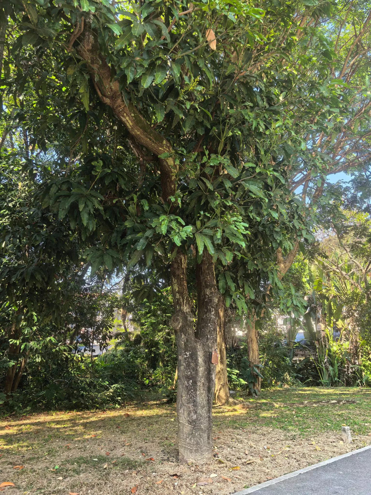
八宝树
Duabanga grandiflora
千屈菜科
材用
观赏
📍 分布：中国云南南部、广西；印度、缅甸、泰国、老挝、柬埔寨、越南、马来西亚、印度尼西亚也有分布。
🌿
价值：木材易于干燥，可用于制作胶合板、一般板料和火柴杆等。生长迅速，是营造水源林和道路绿化的优选树种。树形优美，枝条下垂如伞盖，嫩叶紫红，花大色白，具有很高的观赏价值，是优良的庭园绿化树种。
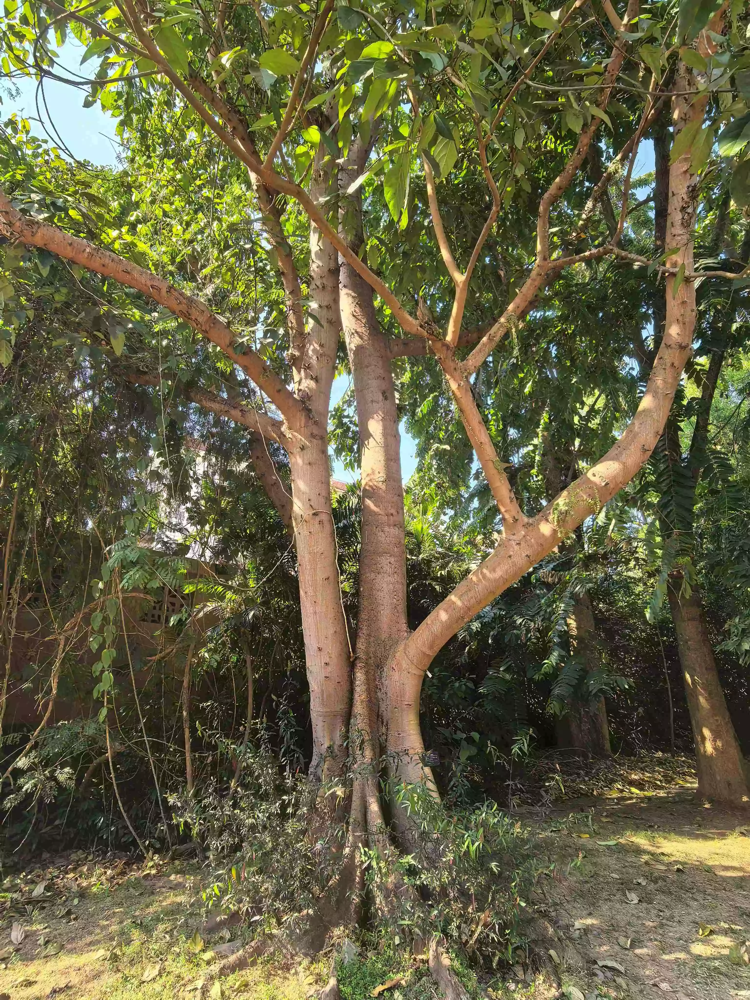
青果榕 (杂色榕)
Ficus variegata
桑科
药用
食用
经济植物
📍 分布：中国广东、广西、云南、海南、福建；越南、泰国、缅甸、澳大利亚等地也有分布。
🌿 价值：根叶可入药，清热泻火，主治乳腺炎。成熟的榕果可食用。茎皮纤维可用于造纸。树形优美，生态价值高，是紫胶虫的优良寄主树，也为榕小蜂等昆虫提供栖息地。
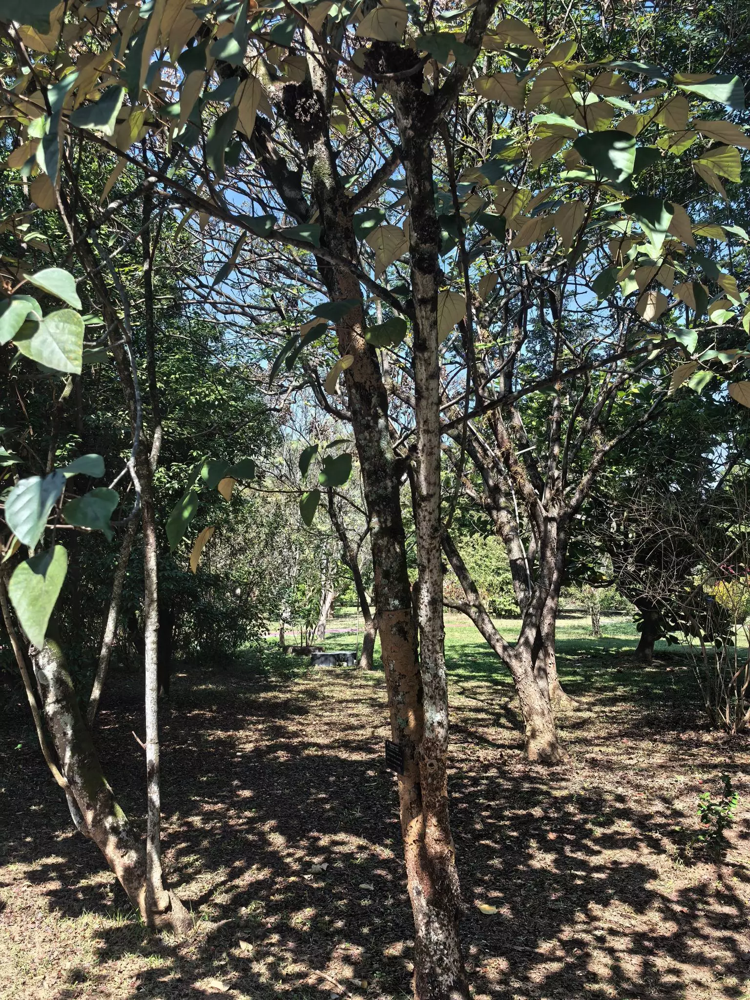
四果野桐
Mallotus tetracoccus
大戟科
📍 分布：中国云南南部、西藏；斯里兰卡、印度、马来西亚、越南等地亦有分布。生长于海拔500-1300米山谷林中。
🌿 价值：目前的公开资料中对其具体经济用途记载较少，其生态价值在于构成森林群落的一部分。
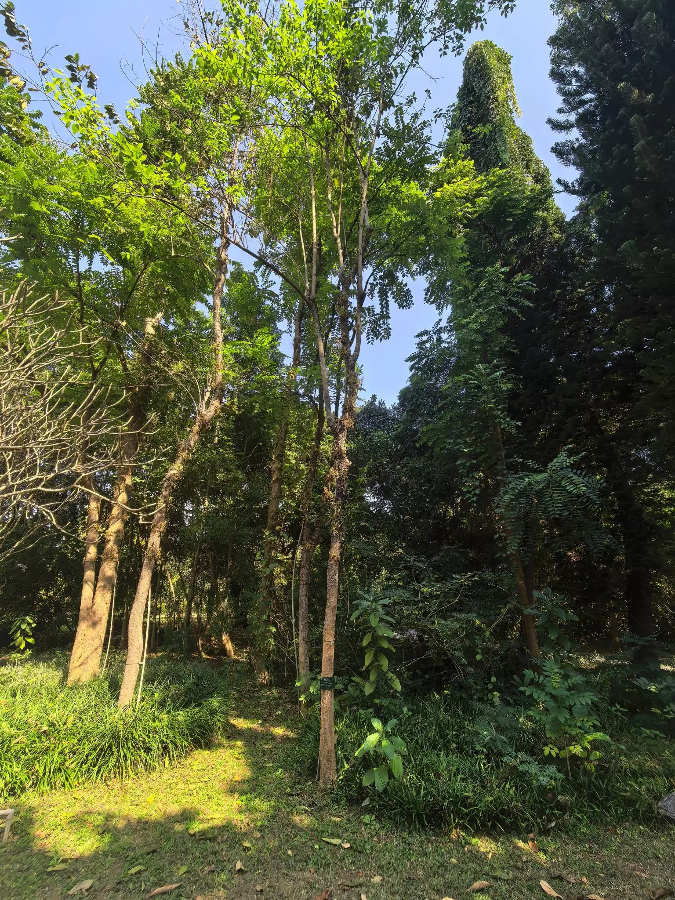
野柿
Diospyros kaki
柿科
食用
药用
经济作物
📍 分布：中国中部、长江流域及云南、广东、广西、江西、福建等省区的山区。
🌿 价值：果实脱涩后可食用，能清热、润肺、生津。未成熟果实可提取柿漆。木材质硬，可用于制作家具、器具。具有清热、健胃、收敛等药用价值。常用作栽培柿树的嫁接砧木。
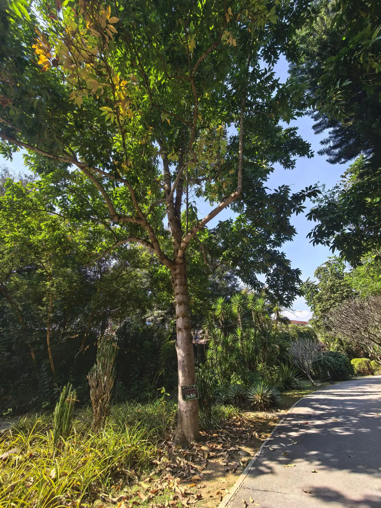
黄兰
Michelia champaca
木兰科
观赏
药用
芳香植物
📍 分布：原产中国、印度、尼泊尔等地。在中国云南南部、广东、广西、福建等地有分布或栽培。
🌿 价值：花朵橙黄色，香气极其浓郁，观赏价值高。花和叶是提取芳香浸膏的原料。根和果实可入药，分别用于祛风利咽、健胃止痛。木材轻软，可用于造船和制作家具。
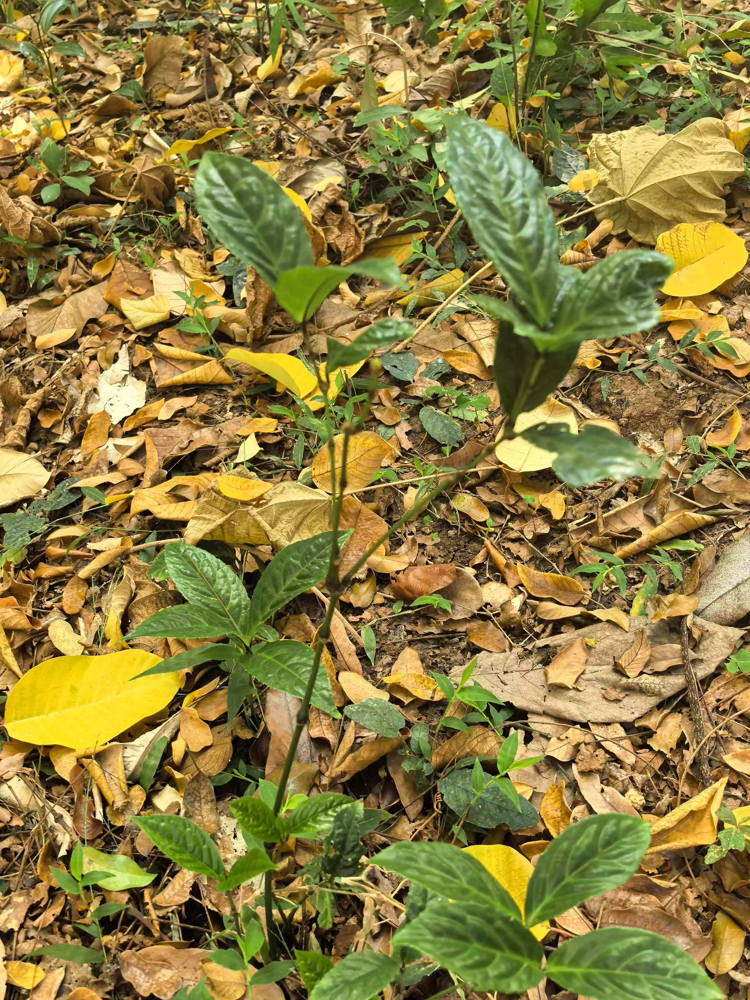
草珊瑚
Sarcandra glabra
金粟兰科
药用
经济植物
📍 分布：中国长江以南各省区（如安徽、浙江、江西、福建、广东、广西、云南等）。在日本、朝鲜半岛、越南、印度等地也有分布。
🌿 价值：全株可药用，能清热解毒、祛风活血、消肿止痛、抗菌消炎。近年来也用于辅助治疗多种恶性肿瘤。此外，还可提取芳香油。是发展林下经济的优良药用植物。
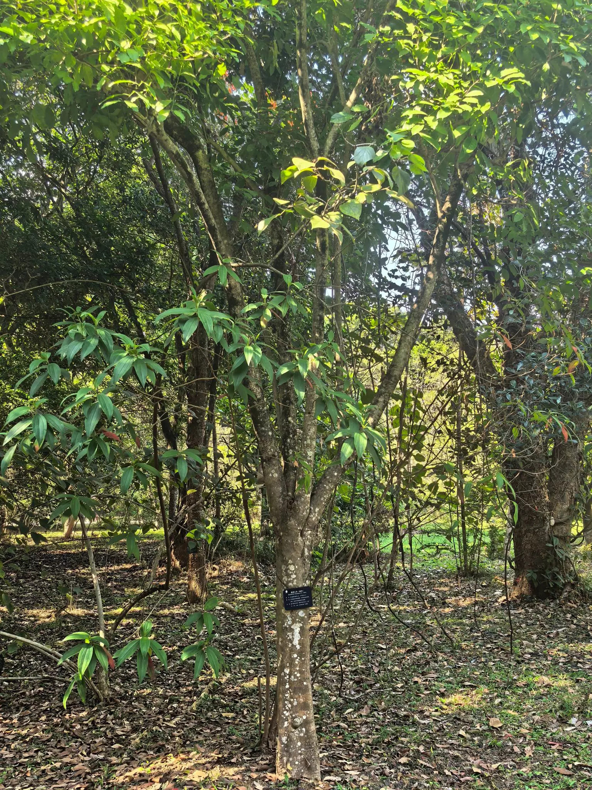
桃花心木
Swietenia mahagoni
楝科
材用
观赏
近危
📍 分布：原产南美洲。现世界热带地区广泛栽培，在中国广东、广西、云南、福建及台湾等地有引种。
🌿 价值：世界名贵木材之一，心材浅红褐色，纹理美观，质地坚硬，易于加工和雕刻，主要用于制造高级家具、乐器、船舶内饰等。树形高大优美，枝叶繁茂，也可作为优良的行道树和庭荫树。
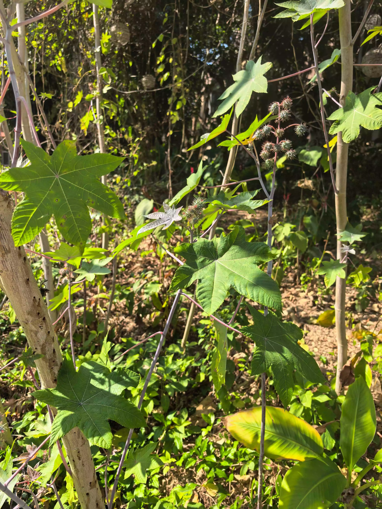
郁金
Curcuma aromatica
姜科
药用
观赏
📍 分布：原产于印度至中南半岛。在中国主要分布于东南部至西南部各省区，如浙江、四川、广东、广西、云南、福建、台湾、江西等地。
🌿 价值：著名的活血化瘀药材，其块根（药材名“郁金”）能活血止痛、行气解郁、清心凉血、利胆退黄。也可提取黄色染料。此外，植株花叶俱美，可用于庭园布置或作为切花。
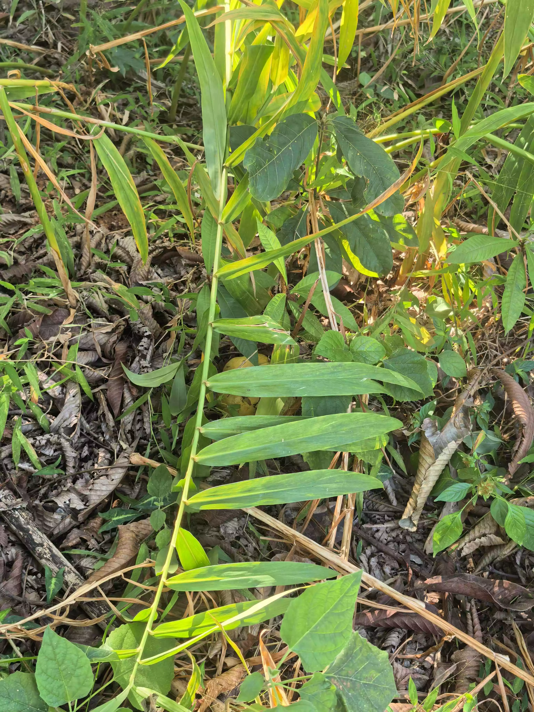
紫色姜
Zingiber montanum (J. König) Link ex A. Dietr.
姜科
药用
食用
📍 分布：主要分布于中国云南南部及东南部的热带雨林地区。亚洲南部的印度、斯里兰卡、柬埔寨、泰国等地也有分布。
🌿 价值：根茎是傣族传统常用药，味苦辛，性温，具有健胃消食、通气止痛、除风解毒、活血消肿等功效，用于治疗胃痛、食积、风湿痹痛等症。也可作为生姜的代用品食用。
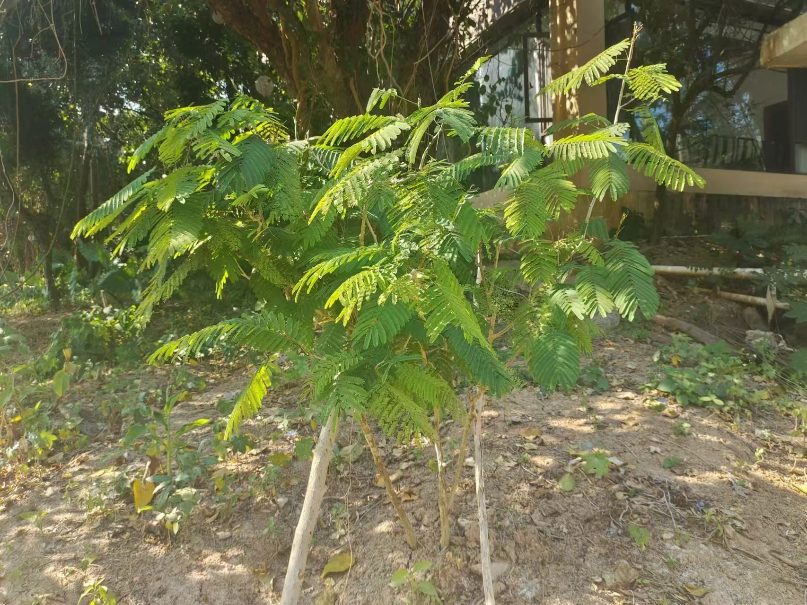
羽叶金合欢
Acacia pennata
豆科
食用
药用
📍 分布：中国云南、广东、福建等地，亚洲和非洲的热带地区也有分布，多生于低海拔疏林中。
🌿 价值：在云南等地，其嫩叶是一种特色野生蔬菜，俗称“臭菜”，蛋白质含量高，可煎蛋或做汤。根和茎可入药，味苦、辛、微甘，性温，具有祛风湿、强筋骨、活血止痛的功效，用于风湿痹痛、跌打损伤等。
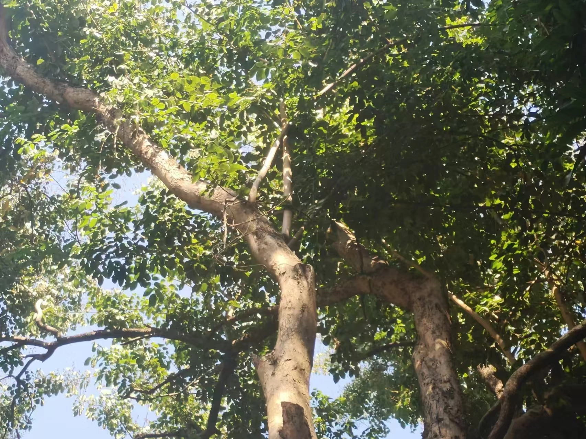
钝叶黄檀
Dalbergia obtusifolia
豆科
濒危
材用
📍 分布：原产于云南西南部和南部；广东、广西、福建、四川、贵州和湖南等省区有引种栽培，生于海拔800-1300米的山地疏林或河谷灌丛中。
🌿 价值：是紫胶虫的优良寄主树之一，所产紫胶是重要的工业原料。同时，其木材材质优良，是制作家具、工艺品的上等用材。该树种生长快、萌芽力强，也可作为绿化树种。

潺槁木姜子
Litsea glutinosa
樟科
药用
经济植物
观赏
📍 分布：分布于中国广东、广西、福建、云南南部及海南等地，越南、菲律宾、印度也有分布。常生于海拔500-1900米的山地林缘、溪旁或疏林中。
🌿
价值：其根、皮、叶可入药，味甘、苦、涩，性凉，能清湿热、消肿毒、止血止痛，用于腹泻、跌打损伤、痈肿等症。木材可供制作家具；树皮和木材含胶质，可作粘合剂；种仁含油，可供制皂。是优良的乡土绿化树种，四季常绿，树形优美，可用于庭园绿化、行道树和生态景观林带建设。
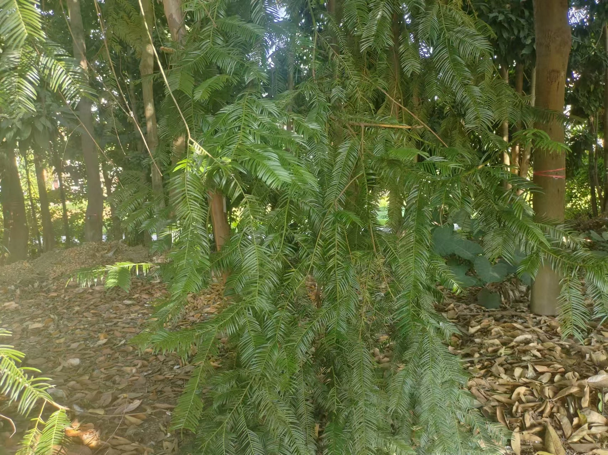
西双版纳粗榧
Cephalotaxus mannii
三尖杉科
药用
材用
📍 分布：产于中国云南南部西双版纳地区，在越南、缅甸、印度也有分布。
🌿 价值：木材坚实，可作农具及工艺用材。其叶、枝、种子、根可提取多种生物碱，特别是三尖杉酯碱和高三尖杉酯碱，具有很强的抗肿瘤活性，对治疗白血病及淋巴肉瘤等有一定疗效。
见血封喉
Antiaris toxicaria
桑科
剧毒
经济植物
📍 分布：分布于中国云南南部、广东（雷州半岛）、海南、广西等地，多生于低海拔雨林中。南亚至东南亚地区，以及大洋洲和非洲的变种也有分布。
🌿 价值：树液有剧毒，历史上常用于制作毒箭猎兽，人畜中毒可迅速麻痹心脏导致死亡。其茎皮纤维坚韧，可用于制作绳索。
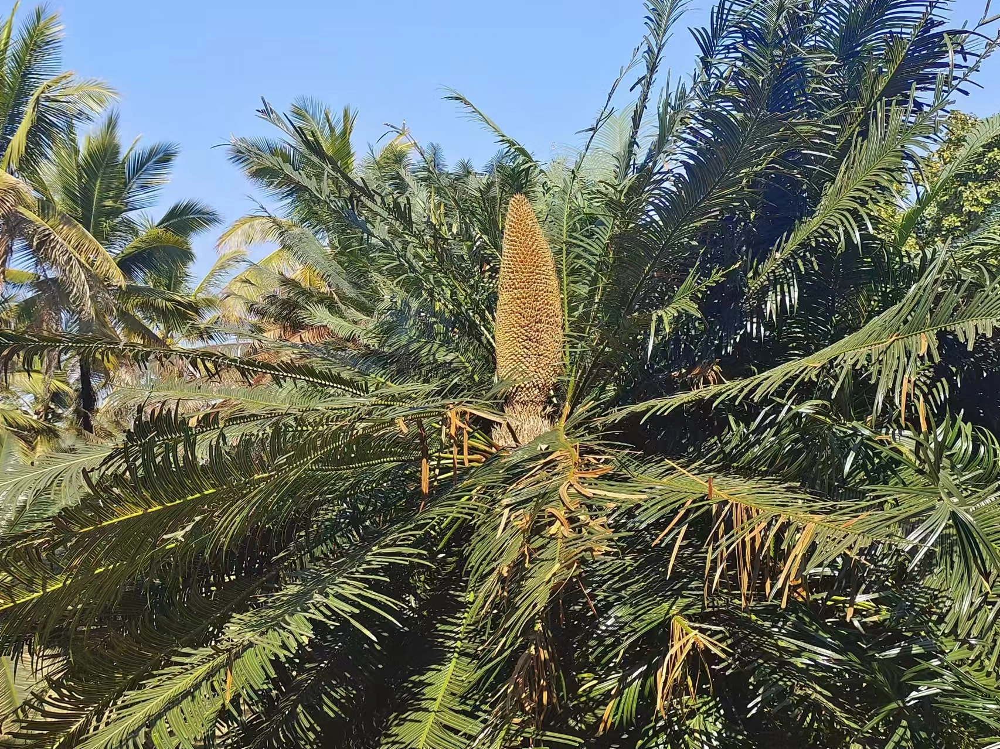
篦齿苏铁
Cycas pectinata
苏铁科
一级保护植物
📍 分布：产于中国云南西南部，印度、尼泊尔、缅甸、泰国、柬埔寨、老挝、越南等东南亚国家也有分布。
🌿 价值：具有重要的学术价值，其大孢子叶与地质时代二叠纪的化石苏铁十分相似，对研究植物演化有重要意义。
泰国大风子
Hydnocarpus anthelminthicus
大风子科
药用
材用
📍 分布：原产于泰国、越南、印度尼西亚等东南亚国家；在中国台湾、云南南部、广东、广西、海南等地均有栽培。
🌿 价值：木材可供建筑、制作高级家具等使用。种子含油，可入药，药性味辛、热，有毒，具有祛风、攻毒、杀虫的功效，传统上用于麻风病、疥癣的防治。树形优美，也是优良的庭院和行道绿化树种。
槟榔
Areca catechu
棕榈科
药用
致癌物
📍 分布：原产于马来西亚，在亚洲热带地区广泛栽培；中国云南、海南、广西、广东及台湾等地也有栽培。
🌿 价值：是重要的中药材，为我国四大南药之一。其果实（槟榔子）在一些地区被用作咀嚼嗜好品。需要特别注意的是，槟榔已被世界卫生组织国际癌症研究机构列为1类致癌物，与口腔癌等疾病风险明确相关。
苏木
Biancaea sappan
豆科
药用
观赏
📍 分布：原产于印度、缅甸、越南等地；在中国云南、贵州、四川、广西、广东、福建和台湾等地有栽培，云南有野生分布。
🌿
价值：其干燥心材是著名中药材，味甘、咸，性平，具有活血祛瘀、消肿止痛的功效，用于治疗跌打损伤、经闭痛经等症。木材心材可提取苏木素，用作天然染料和有机试剂。同时，它也是常见的园林观花树木，适合在公园、风景区栽培观赏。
纤花蒲桃
Syzygium leptanthum
桃金娘科
观赏
📍 分布：分布于澳大利亚、锡金以及中国大陆的海南、云南等地，生长于海拔600米至1,210米的地区，一般生长在常绿阔叶林中，尚未由人工引种栽培。
🌿 价值：作为蒲桃属植物，其树形优美，枝叶繁茂，具有一定的观赏价值。
洋紫荆
Bauhinia variegata
豆科
观赏植物
药用
📍 分布：原产于中国华南地区及印度，在世界各地热带及亚热带地区广泛栽培。在中国分布于福建、广东、广西、云南、海南、台湾等地。
🌿 价值：著名的观赏树木，花期冬春之间，花大色艳（常见粉红、淡紫或白色），繁花满树，常作为庭院树和行道树。树皮、根、花等可入药，用于治疗消化不良、咳嗽、支气管炎等。